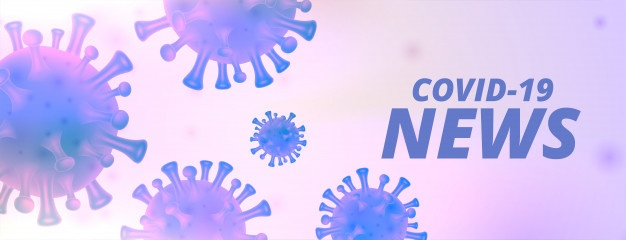

July 15
I coughed with something that seemed to clog my throat. Strangely, I could not cough it out as I struggled all day to expel it. All coughs came out dry. Ever since then, more symptoms appeared and I am left in this powerless state that puts my life at risk.
July 23
Both of my Covid-19 tests came out positive and I am put to self-isolation in our family RV alone for over a month. Consuming specific Tylenol pills help suppress some of the symptoms: dry cough, shortness of breath, fatigue, and nausea (surprisingly, I did not show symptoms of fever). Almost all day, I use my PC to communicate with my friends, play games, watch videos, browse for future job opportunities, and plan for SJSU’s 2020 - 2021 schedule.
August 14
My third and fourth test from August 11 and 14 post-isolation came out negative but I was not feeling very satisfied. I have no idea if I will have chronic illness or Covid-19 symptoms will reappear. So far, I expressed no illness or symptoms but I know that the fear that still lingers in my mind continues to plague my mentality.
I believe I caught it after I helped my friend, who did not test positive by the time I write this, emotionally and personally. After all the time and effort I spent with my friend, I was rewarded with a potentially life-threatening virus. Dealing with the virus is like managing different bodily systems and behaviors, adapting to the rapid change while worrying about other responsibilities like finances. I can compare this to virtual and local communities. News and digital media spreads like wildfire, contagious based on the tone of its content. Negativity, humor, and politics are known to be remembered for years, ingrained and infecting history and twisting the mentality of humanity. By sharing person-to-person or in a group, those lethal information gets passed on and reacted based on opinion, act, and thoughtfulness. We can pitch in what we think or ignore it. We can create events to tackle higher power that cast inequality and silence. We can resolve a civil matter in response to the negative impact that can threaten our daily lives. Thus, our response is what makes materials, contents, and information contagious. It is a grayscale to consider what viral media we must prevent or keep but when it comes to Covid-19, our perception and influence by higher power and fear is what makes this virus viral.
